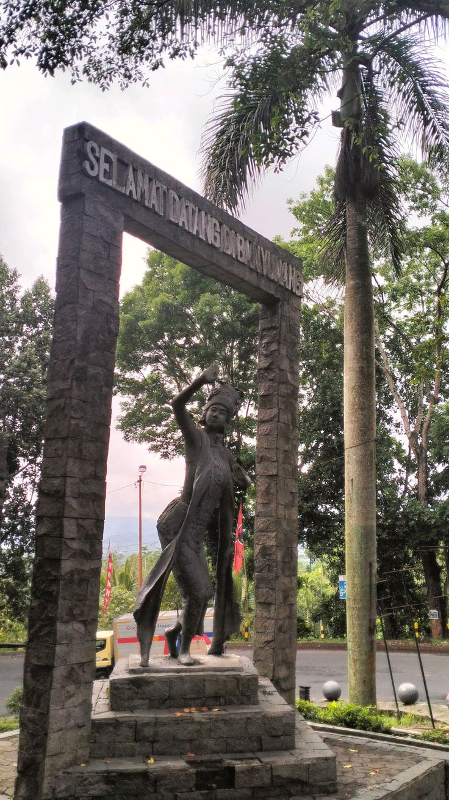
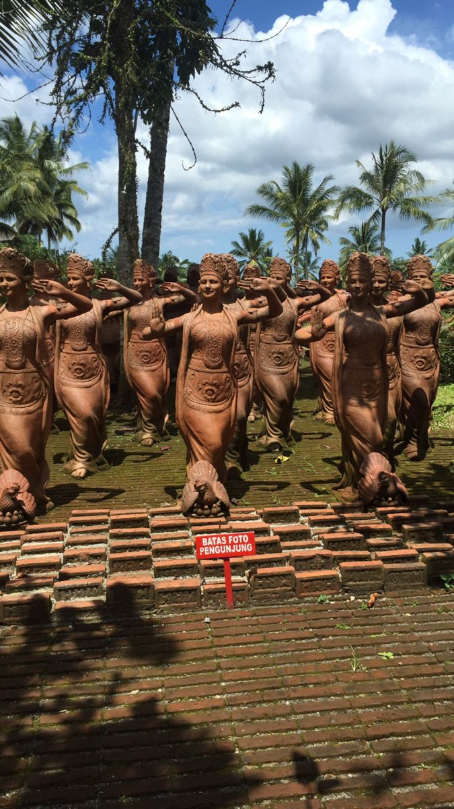
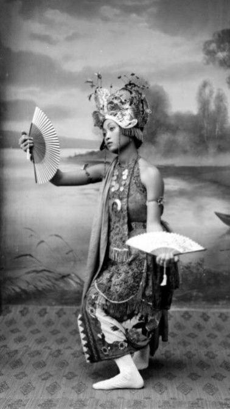
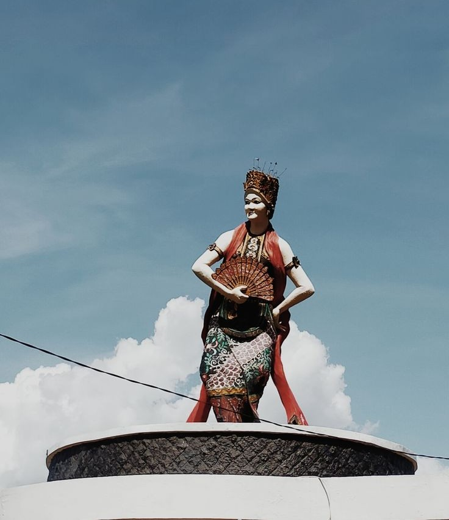
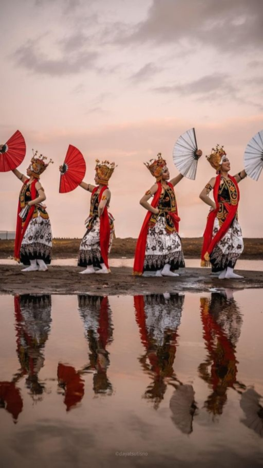

Sejarah & Asal Usul
Tarian Gandrung berasal dari Banyuwangi sebagai ungkapan rasa syukur dan kegembiraan masyarakat setelah berhasil melewati masa sulit dan peperangan di masa lampau. Kata "Gandrung" berarti terpesona atau jatuh cinta yang mendalam, yang merefleksikan kecintaan masyarakat terhadap kehidupan dan alam.
Pada awal kemunculannya, penari Gandrung justru ditarikan oleh laki-laki, sebelum akhirnya bergeser menjadi identik dengan penari perempuan. Kini, kesenian ini menjadi ikon budaya untuk hiburan dan penyambutan tamu penting, serta telah ditetapkan sebagai Warisan Budaya Takbenda Indonesia.
Makna Filosofis
Legenda dan tarian Gandrung mengandung nilai-nilai kehidupan yang mendalam bagi masyarakat Banyuwangi:
Rasa Syukur atas Kehidupan
Gandrung lahir dari rasa syukur masyarakat agraris Blambangan yang berhasil panen setelah masa-masa sulit.
Kebersamaan & Persaudaraan
Tarian ini memperkuat ikatan sosial antar-masyarakat, terutama saat babak interaktif (ngibing) di mana penonton diajak menari bersama.
Semangat Pantang Menyerah
Merefleksikan ketangguhan masyarakat Blambangan yang bangkit dari kesulitan dan peperangan di masa lampau.
Cinta terhadap Budaya Daerah
Gandrung adalah wujud cinta dan kebanggaan masyarakat Osing terhadap identitas dan warisan leluhur mereka.
Tahapan Pertunjukan
Nilai-nilai legenda tersebut diwujudkan dalam pementasan tari yang terdiri dari tiga tahapan utama:
1. Jejer (Tarian Pembuka)
Tarian pembuka sebagai bentuk penghormatan kepada penonton dan tamu undangan. Penari menyanyikan lagu-lagu sakral dengan gerakan anggun.
2. Paju (Sesi Interaktif)
Sesi interaktif di mana penari melempar selendang (sampur) dan mengajak penonton atau tamu untuk ikut menari bersama demi keakraban.
3. Seblang-Subuh (Bagian Penutup)
Bagian penutup pertunjukan yang khidmat, digelar menjelang fajar dengan nuansa religius dan doa keselamatan.
Fakta Menarik
Awalnya Penari Laki-laki
Pada awal kemunculannya, penari Gandrung justru ditarikan oleh laki-laki (disebut Gandrung Marsan) yang berdandan menyerupai wanita.
Festival Gandrung Sewu
Memiliki festival tahunan berskala besar bernama Gandrung Sewu yang melibatkan ribuan penari di tepi pantai Selat Bali.
Mahkota Emas (Omprog)
Kostumnya sangat khas dengan mahkota emas yang dihiasi ornamen khas, melambangkan keagungan dan perlindungan.
Iringan Musik Khas
Diiringi musik tradisional yang unik, perpaduan biola, kendang, dan gong khas Banyuwangi yang sangat dinamis.
Galeri




